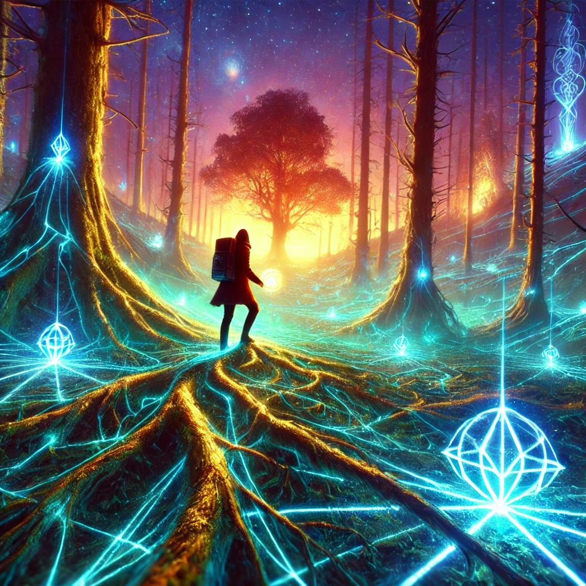

The wilderness around you seems endless, and the winding paths ahead feel like distractions. You grip the compass tightly, its light steady, as you decide to carve your own way forward. The forest resists at first—branches scrape and roots trip you—but your determination sharpens with every step.
The air thickens, as though the world itself is watching your boldness. The compass hums in your hand, its glow intensifying with each barrier you push through. The voice of the unseen speaks, resolute and strong:
“To forge a path is to claim your destiny. The direct route is not always the easiest, but it reveals the strength of your will.”
The trees begin to thin, revealing an open expanse bathed in an otherworldly glow. Three distinct landmarks appear on the horizon, each calling to a different aspect of your being.

Which landmark will you head toward?